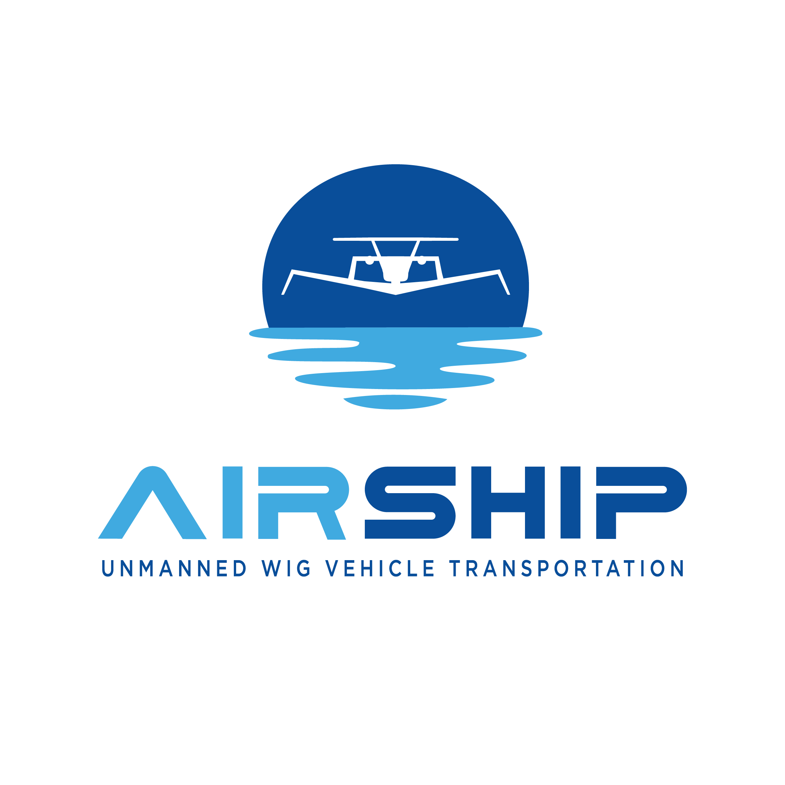

Research & Projects
FALCON-S (2026)
Fixed-Wing Robots in Ground Effect: A High-Fidelity Aerodynamic Simulation Framework for Flight Control

FALCON-S introduces a comprehensive simulation and learning framework for autonomous control of fixed-wing Wing-in-Ground (WIG) effect vehicles. The suite addresses the unique aerodynamic challenges of near-surface flight, where ground-effect interactions create highly nonlinear and rapidly varying dynamics that classical controllers struggle to handle robustly.
Key Contributions:
- High-fidelity aerodynamics simulation suite for WIG-effect fixed-wing vehicles
- Deep RL controllers robust to ground-proximity aerodynamic perturbations
- Systematic evaluation benchmarks for near-surface autonomous flight
- Benchmarked against classical GNC baselines (PID, LQR, MPPI)
RSS 2026 (under review) — Matteo El-Hariry, Pedro Lima, Andrej Orsula, Matthieu Geist, Miguel Olivares-Mendez
Autonomous Guidance, Navigation, and Control for Unmanned WIG Vehicles

As Lead Research Scientist in the development of RL-based autonomous navigation systems, I'm working on autonomous Guidance, Navigation, and Control (GNC) strategies for innovative Unmanned WIG Vehicles (UWV). This Horizon Europe project focuses on developing cutting-edge autonomous systems for next-generation aviation.
- Design and simulation of advanced GNC strategies for WIG vehicles
- Deployment of RL-based policies for autonomous maneuvering with enhanced speed, flexibility, and energy efficiency
- Integration of machine learning algorithms for real-time decision making in complex environments
For more information, check out airshipproject.eu.